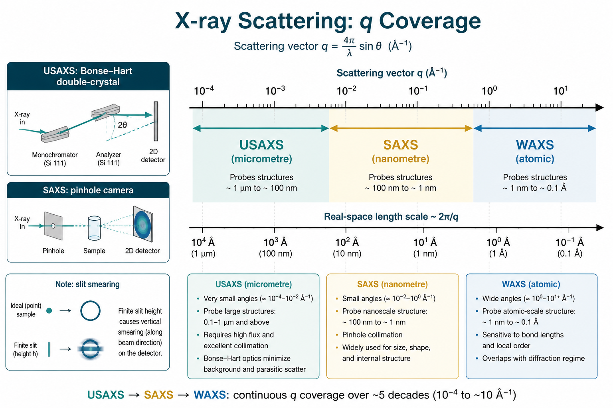

超小角 X 射线散射（USAXS）
Ultra-small-angle X-ray scattering — very low $q$, micrometre-scale structure
本导读说明为何需要进入极低 $q$、Bonse–Hart 与针孔几何的差异、狭缝 smearing 的处理，以及如何把 USAXS 与 SAXS 拼接并对接到玻璃碳 / NIST SRM 3600 绝对标定。核心文献：Peyronel & Pink（2018）USAXS 专章；辅以 Pedersen（1995）仪器与 smearing、Zhang 等（2010）玻璃碳标样、Allen 等（2017）SRM 3600、Jeffries 等（2021）方法学导论。
问题是什么
常规 pinhole SAXS 的最低 $q$ 往往落在 $\sim 10^{-2}\,\mathrm{\AA}^{-1}$ 量级，对应实空间尺度 $L=2\pi/q$ 约数十纳米。若样品含微米级畴、大孔、聚集体、层次结构或分形网络，低 $q$ 的 Guinier 区与前向散射 $I(0)$ 会落在仪器盲区之外——曲线在「尚未变平」处就被截断，无法可靠求 $R_g$、体积分数、分形维数或层次结构的大尺度相关。
USAXS（ultra-small-angle X-ray scattering） 把可达 $q$ 延伸到约 $10^{-4}$–$10^{-3}\,\mathrm{\AA}^{-1}$（Si 220 晶体对 $\Delta q\sim 10^{-4}\,\mathrm{\AA}^{-1}$；Si 440 可达 $\sim 3\times 10^{-5}\,\mathrm{\AA}^{-1}$），对应数百纳米到数微米（Peyronel 2018）。它回答的典型问题是：
- 大尺度结构是否存在、是否进入 Guinier 平台？特征长度是否在 $0.1$–$20\,\mu\mathrm{m}$？
- USAXS 与 SAXS（乃至 WAXS）能否拼成一条跨 4+ 数量级的 $I(q)$？
- 低 $q$ 幂律斜率是否反映分形维数或层次「结构级」（structural level）？
- 在绝对强度尺度上，低 $q$ 抬升来自真实结构还是多重散射 / 仪器散射 / 未 desmear？
代价是：多数经典 USAXS 为狭缝准直（Bonse–Hart），测得曲线是 smeared 的一维剖面；与针孔 SAXS 比较或拟合模型前，必须显式处理 smearing，或对模型做 smeared 卷积（Pedersen 1995；Peyronel 2018）。
尺度窗口：USAXS 在 SAS 谱中的位置
Peyronel & Pink（2018）将弹性 X 射线散射按 $L=2\pi/q$ 划分为：
| 技术 | 结构尺度 | 典型 $q$（$\mathrm{\AA}^{-1}$） | 典型应用 |
|---|---|---|---|
| WAXS / 衍射 | 原子（$\sim 1$–$10\,\mathrm{\AA}$） | $\sim 0.6$–$6$ | 晶胞、链堆积 |
| SAXS | 分子/纳米（$\sim 10$–$100\,\mathrm{nm}$） | $\sim 0.06$–$0.6$ | 胶束、片层、形式因子 |
| SAXS / USAXS 过渡 | 纳米–亚微米（$\sim 100$–$500\,\mathrm{nm}$） | $\sim 0.007$–$0.06$ | 大胶束、小聚集体 |
| USAXS | 微米（$\sim 0.1$–$20\,\mu\mathrm{m}$） | $\sim 3\times 10^{-5}$–$6\times 10^{-4}$ | 孔洞、晶粒、网络、层次聚集 |
同一软物质样品常同时在纳米（SAXS）与微米（USAXS）有信号——例如结晶纳米片（CNP）聚集网络（Peyronel 2013–2017 系列）。仅测 SAXS 会漏掉大尺度 Guinier 或 Porod 尾；仅测 USAXS 则无法解析分子/纳米级 Bragg 或形式因子。

文献主线
Peyronel & Pink 2018：USAXS 原理、仪器与层次解读
专章（DOI: 10.1016/B978-0-12-814041-3.00009-5）从 $q=k_s-k_i$、$q=4\pi\sin\theta/\lambda$ 与 $L=2\pi/q$ 出发，系统说明 USAXS 为何需要专用光学：
- Bonse–Hart 双晶： 入射与分析各一对 Si 晶体，靠摇摆曲线定义极窄角分辨率；APS 9ID 仪器无传统 beamstop，用光电二极管动态范围 $>10^8$ 同时测主束与弱散射，实现一级绝对标定（Ilavsky 2009, 2012）。
- 一维几何与 desmear： 垂直方向高分辨率、水平方向积分 → 须 Lake 算法 desmear 或 smeared 模型；空白样扣除仪器散射，束形每 2 h 或换样重录。
- 多探测器串联： 同一样品位自动切换 USAXS / pinhole SAXS / WAXS，覆盖 $q\sim 10^{-4}$–$\sim 7\,\mathrm{\AA}^{-1}$（Peyronel 2014c）。
- 层次拟合： Unified Fit（Beaucage）与 Guinier–Porod 模型在 log–log 图上分段识别 structural level；幂律指数 $|P|$ 联系分形维数（$|P|=4$ 光滑表面；$1\le |P|<3$ 质量分形）。模拟 $S(q)$ 与实验 $I(q)$ 对照可验证聚集机制。
虽以食用脂肪中 CNP 网络为例，方法可推广至孔材料、合金析出、聚合物分形聚集等任何需微米尺度的体系。
Pedersen 1995：Bonse–Hart、针孔与 smearing
Pedersen 仪器章系统比较长狭缝（Kratky）、Bonse–Hart 晶体准直与 pinhole 相机。Bonse–Hart 用两块（或多块）完美晶体做入射与分析准直，靠晶体摇摆曲线定义极窄角分辨率，从而在紧凑几何下到达极低 $q$；测得的是沿狭缝高度方向积分后的强度。狭缝 smearing 使尖峰变钝、低 $q$ 抬高、表观 $R_g$ 偏大——若不校正，会系统性误读结构（Pedersen 1995）。
Zhang 2010 → Allen 2017：USAXS 一级标定与 SRM 3600
APS USAXS 可用光电二极管同时覆盖主束与弱散射，具备一级绝对标定能力。Zhang 等以此验证玻璃碳作为二级强度标样的均匀性与稳定性；Allen 等进一步发布 NIST SRM 3600，把认证的 $\mathrm{d}\Sigma/\mathrm{d}\Omega(Q)$ 曲线（约 $0.008$–$0.25\,\mathrm{\AA}^{-1}$）提供给全球透射几何 SAXS 作日常标定（详见 绝对标定专题）。
Jeffries 2021 与现代 USAXS/SAXS/WAXS 管线
Jeffries 等 Primer 指出：同步辐射台站常把 USAXS、中等 $q$ 的 pinhole SAXS 与 WAXS 串联，在同一样品几何下快速扫完多个数量级的 $q$。Bonse–Hart 后置晶体可省去部分几何去卷积；高亮度使弱 USAXS 信号仍可达统计。材料科学应用包括：合金析出跨尺度演化、岩石/页岩孔隙连通性、相分离动力学（USAXS+VSANS）等——与生物稀溶液的 reporting 框架不同，但绝对标定与 smearing 处理原则相同。
关键概念与结论
何时必须用 USAXS
- SAXS 最低 $q$ 处 $I(q)$ 仍陡升，Guinier 未平台化；目标特征长度 $\gtrsim 100\,\mathrm{nm}$。
- 需要绝对 $\mathrm{d}\Sigma/\mathrm{d}\Omega$ 追溯至主束强度（一级法），或为二级标样（玻璃碳）提供权威曲线。
- 层次材料需在 log–log 图上识别多个 knee / 幂律段（Unified Fit 多 level）。
Bonse–Hart vs pinhole
| 方面 | Bonse–Hart USAXS | Pinhole SAXS / USAXS |
|---|---|---|
| 最低 $q$ | 极低（$\sim 10^{-4}\,\mathrm{\AA}^{-1}$ 量级可行） | 受准直、相机长度与束斑限制；「超小角」针孔需长光路或聚焦光学 |
| 数据形态 | 一维摇摆曲线；狭缝 smear | 2D 图样 → 径向积分；几何 smear 通常较弱 |
| 分辨率 | 由晶体摇摆曲线决定角分辨率 | 由针孔、束散度与像素立体角决定 |
| 绝对标定 | 可直测 $I_0$ 与 $I_S$，适合一级标定（Zhang / Allen） | 常用玻璃碳 / SRM 3600 等二级标样 |
| 适用 | 大尺度结构、绝对截面溯源、与 SAXS 拼接 | 常规纳米结构、各向异性 2D、高通量筛样 |
狭缝 smearing 为何重要
狭缝几何下测得强度可写为理想 $I(q)$ 与分辨率函数 $R$ 的卷积（Pedersen 1995）：
$$I_{\mathrm{sm}}(q)=\int R(q,q')\,I(q')\,\mathrm{d}q'.$$后果包括：Guinier 斜率变缓、Porod 尾变钝、尖锐 Bragg / 相关峰被抹平。实践二选一：
- Desmear： 用 Lake 等迭代算法从 $I_{\mathrm{sm}}$ 反演近似 $I(q)$，再与针孔数据拼接或拟合；
- Smeared 模型： 对理论 $I(q)$ 施加同一核 $R$ 再拟合，避免 desmear 放大噪声。
未处理 smearing 时，低 $q$ 抬高、$I(0)$ 与 $R_g$ 偏大，与 pinhole 曲线在重叠区无法重合。
USAXS + SAXS 拼接
完整层次结构常需跨 $q$ 拼接。推荐顺序：
- 各自完成背景扣除、$q$ 刻度与透射/厚度校正（见 数据还原专题）；
- USAXS 侧处理 smearing；两端数据置于同一绝对强度尺度；
- 在重叠 $q$ 窗检查斜率与强度是否一致（常 $\pm$ 数百分比内）；
- 用加权平均或分段衔接生成连续 $I(q)$，再进入 Guinier / Porod / 模型拟合。
重叠区系统偏差通常指向：smearing 未一致处理、绝对标定因子不一致、或样品在两次测量间状态变化（变温结晶样品尤甚）。Peyronel 2018 建议：变温实验用 Linkam 等温控台，记录冷却速率（如 $1\,^\circ\mathrm{C}/\mathrm{min}$ vs $30\,^\circ\mathrm{C}/\mathrm{min}$），因微观结构对热史敏感。
解读：层次结构与分形
USAXS 区常无 Bragg 峰，而以 Guinier knee + 幂律尾为主。Peyronel 用 Monte Carlo 模拟 CNP 聚集，预测 $\log S(q)\propto -D\log q$ 的分形区，与实验 $\log I(q)$ 斜率对照。Unified Fit 允许多个 linked structural level：Level 1 对应基本散射单元，Level 2/3 对应逐级聚集。拟合时 $\chi^2$ 最小不足以定论——须在宽 $q$ 窗内斜率稳定且与独立显微证据一致。Irena（APS）是常用分析软件。
- 是否需要 USAXS： 常规 SAXS 最低 $q$ 处 $I(q)$ 仍陡升、Guinier 未出现，或目标尺度 $\gtrsim 100\,\mathrm{nm}$。
- 几何与 smear： 记录狭缝高度/宽度或晶体摇摆参数；计划 desmear 或 smeared 拟合，勿直接与 pinhole 曲线叠图定论。
- 绝对强度： 优先玻璃碳或 SRM 3600；跨仪器拼接前确认标定因子一致（绝对标定）。
- 拼接： 重叠区强度与斜率自洽；记录衔接 $q$ 与缩放（理想情况缩放因子 $\equiv 1$）。
- 解读： 低 $q$ 抬升先排除多重散射、表面散射与背景；再用 Guinier / 模型解释大尺度。
实践要点与坑
- 把 smeared 曲线当 pinhole $I(q)$ → 如何判断： 与针孔数据在重叠区对不上；表观 $R_g$ 偏大、低 $q$ 抬高。必须 desmear 或 smeared 模型（Pedersen 1995）。
- 拼接只靠任意缩放 → 如何判断： 重叠窗斜率本不一致却强行乘常数。先统一绝对标定与 smearing，再拼接。
- 忽略仪器散射 → 如何判断： 空白样未测或束形漂移；低 $q$ 抬升不随样品厚度变化。定期录 beam profile。
- 忽略多重散射 → 如何判断： 厚样品 / 强散射体低 $q$ 异常抬高；改变厚度后曲线形状变。减薄样品或检查透射率。
- Guinier 仍不够低 $q$ → 如何判断： USAXS 末端仍无平台。报告可达 $q_{\min}$ 与下限 $R_g$，勿外推虚假 $I(0)$。
- 标定批次混用 → 如何判断： 不同玻璃碳批次截面可差 $>10\%$。固定 SRM 3600 或同批标样并记录证书。
- 分形斜率过度解读 → 如何判断： Unified Fit 的 $|P|$ 仅在足够宽 $q$ 窗且信噪比足够时才有物理意义；多 level 耦合时斜率非唯一。
- 样品取向/压缩 → 如何判断： 半固体装样时剪切或压制会在 USAXS 引入各向异性；Peyronel 强调装样勿压缩（AOCS 2016）。
相关词条
USAXS、 仪器 smearing、 绝对强度、 散射矢量 $q$、 Guinier 分析、 Porod 定律、 前向散射 $I(0)$
相关学习章与专题
- 03 仪器与几何 — 针孔 / 狭缝准直与 $q$ 覆盖
- 04 数据还原 — 背景、透射、$2\mathrm{D}\to I(q)$
- 05 绝对标定 — 玻璃碳与强度尺度
- 绝对标定专题 — SRM 3600 与 USAXS 一级法
- 数据还原专题 — 拼接前的还原管线
文献列表
- Ultra-small angle X-ray scattering. Fernanda Peyronel, David A. Pink (2018). DOI: 10.1016/B978-0-12-814041-3.00009-5
- Small-angle X-ray and neutron scattering. Cy M. Jeffries et al. (2021). DOI: 10.1038/s43586-021-00064-9
- Glassy Carbon as an Absolute Intensity Calibration Standard for Small-Angle Scattering. Fan Zhang et al. (2010). DOI: 10.1007/s11661-009-9950-x
- NIST Standard Reference Material 3600: Absolute Intensity Calibration Standard for Small-Angle X-ray Scattering. Andrew J. Allen et al. (2017). DOI: 10.1107/S1600576717001972
- Instrumentation for small-angle scattering. Jan Skov Pedersen (1995). DOI: 10.1007/978-94-015-8457-9_2